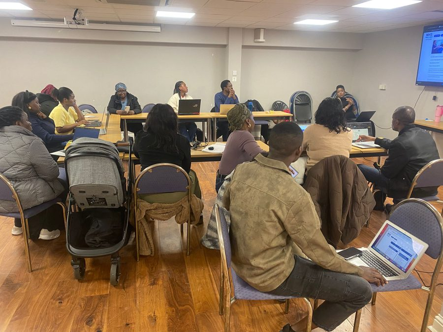
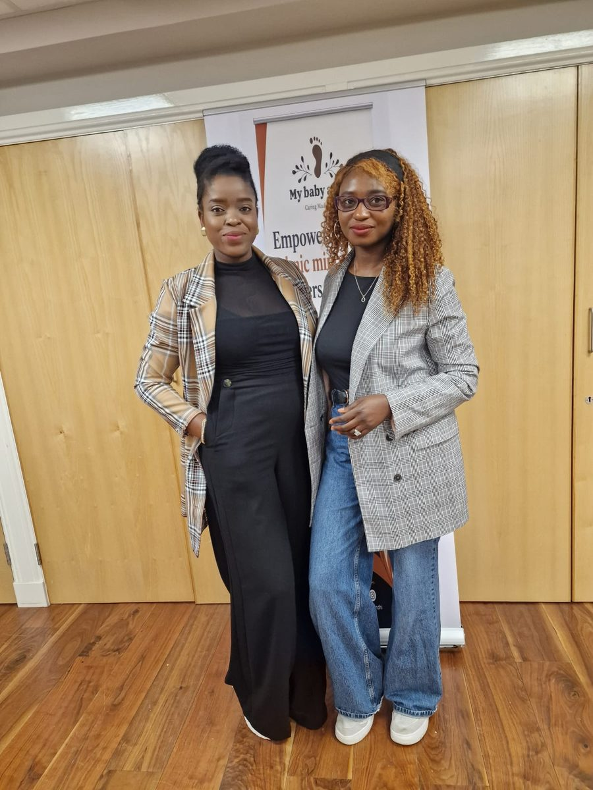
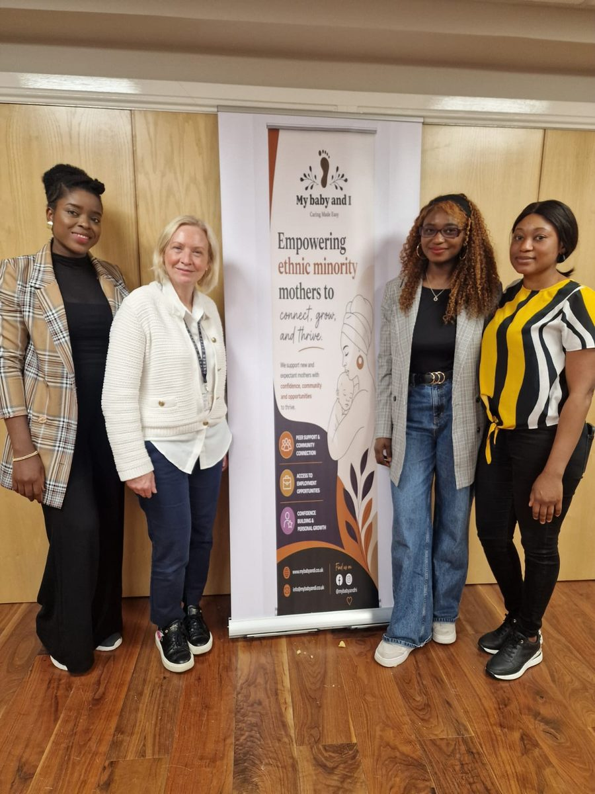
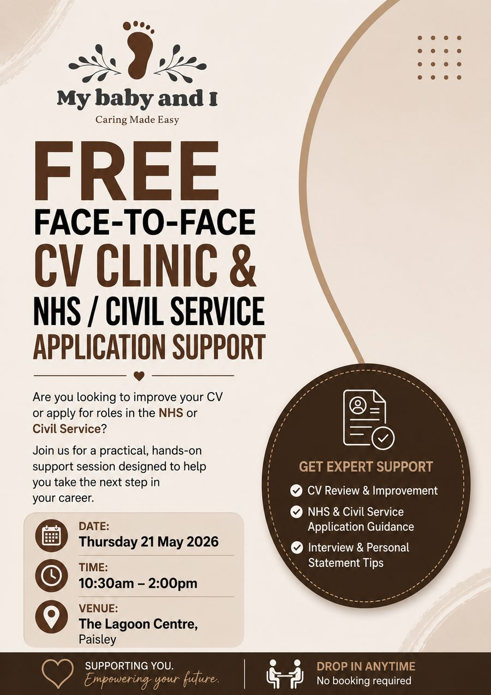

On a sunny Wednesday morning in May, mothers from across Renfrewshire gathered at The Lagoon Centre, Paisley for our inaugural CV Clinic. The session was designed around one simple idea: that every woman in our community deserves the tools, knowledge and confidence to pursue meaningful employment — regardless of where she was born or how long she has been in Scotland.
Facilitated by experienced employment advisors, the morning covered CV writing for UK employers, navigating NHS and Civil Service application portals, and the importance of tailoring your application to the person specification rather than the job title.

Attendees at the My Baby And I CV Clinic session at The Lagoon Centre, Paisley — 21 May 2026
What we covered
The NHS and Civil Service were chosen as focus employers because they are two of Scotland's largest employers and actively seek diverse candidates — yet the application process can feel daunting without the right guidance. My Baby And I bridges that gap.
- How to structure a UK-style CV from scratch
- Understanding NHS and Civil Service application forms
- Writing competency-based personal statements
- Interview preparation and confidence building
- One-to-one CV review and feedback


Members of the My Baby And I team and community at the CV Clinic event
Why this matters
For many of the women who attended, barriers like unfamiliarity with UK application processes, gaps in employment history due to childcare, and a lack of professional networks had made job searching feel overwhelming. Our CV Clinic gave them practical skills and — just as importantly — community support from women who truly understand their experience.
"I had no idea how different Scottish employer applications are from what I was used to. This session completely changed how I approach job searching."
— Attendee, CV Clinic May 2026
The flyer

My Baby And I CV Clinic — 21 May 2026
Join us next time
We run regular employability sessions, peer support groups, and community events across Glasgow and Renfrewshire. All our services are completely free and designed around the real needs of our community. Our next CV Clinic is on 31 October 2026 at One Ren, Paisley.